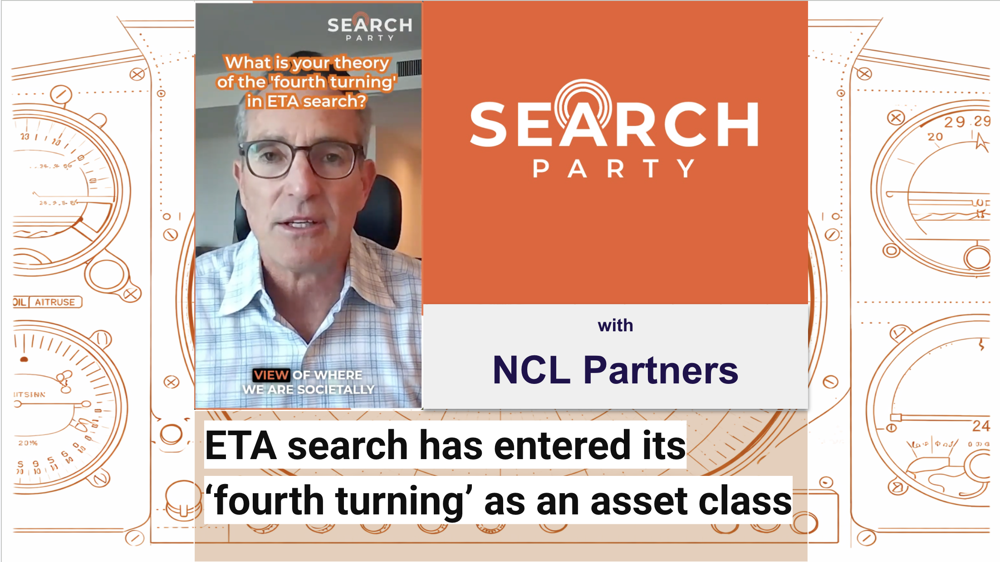
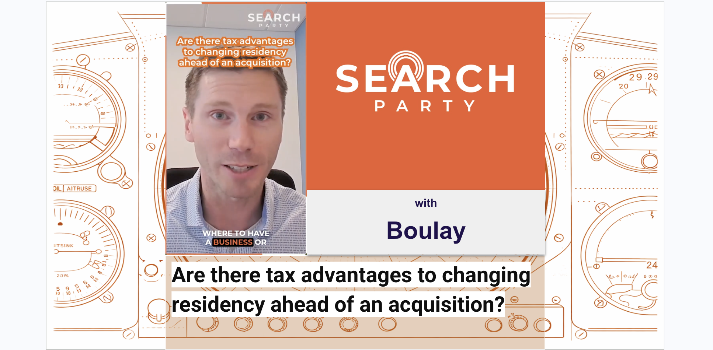

Search for people, firms and topics to have appeared on the Search Party video-podcast








Search Party is a video-podcast dedicated to elevating knowledge of the Entrepreneurship-Through-Acquisition (ETA) model for value creation. The podcast features curated interviews and panel discussions with ETA searchers, CEOs, exited CEOs and investors — covering everything from the search and acquisition process to operations, financing, and exits.
Search Party is hosted by financial journalist David Snow, a long-time chronicler of the alternative investment market.